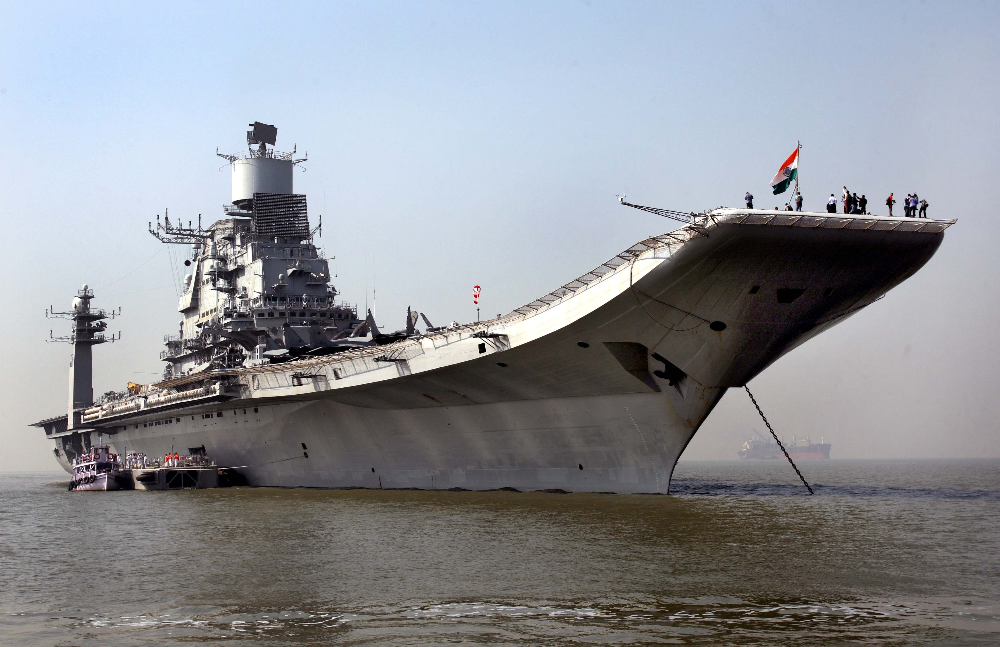
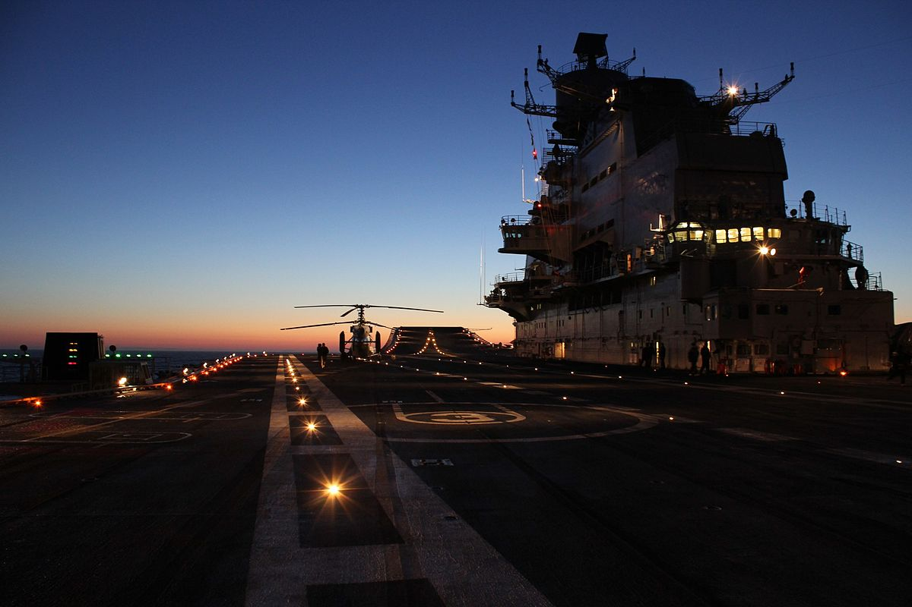
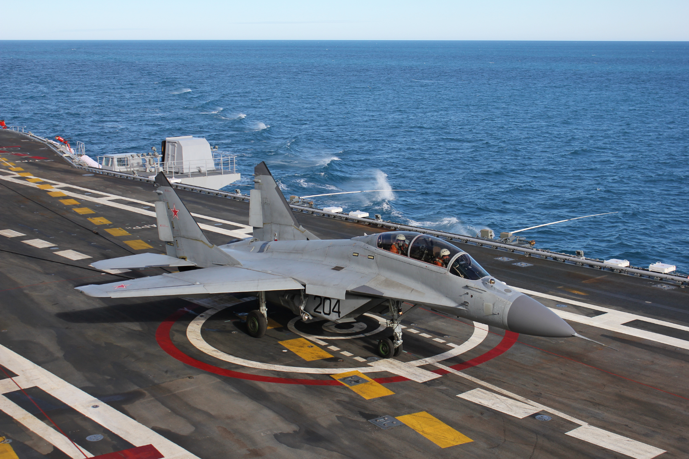
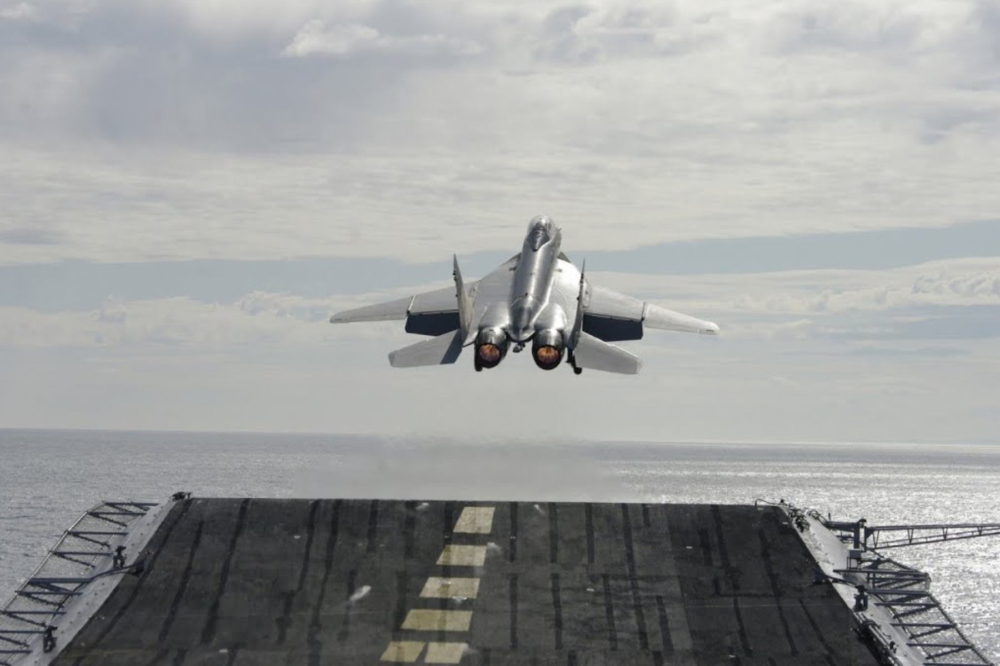
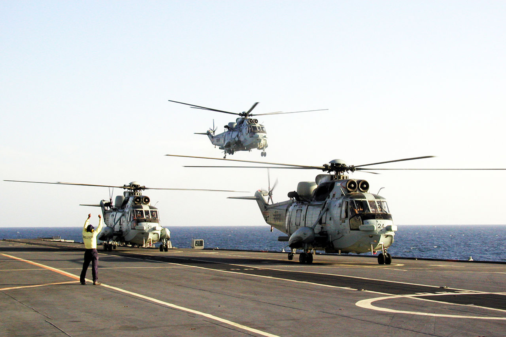
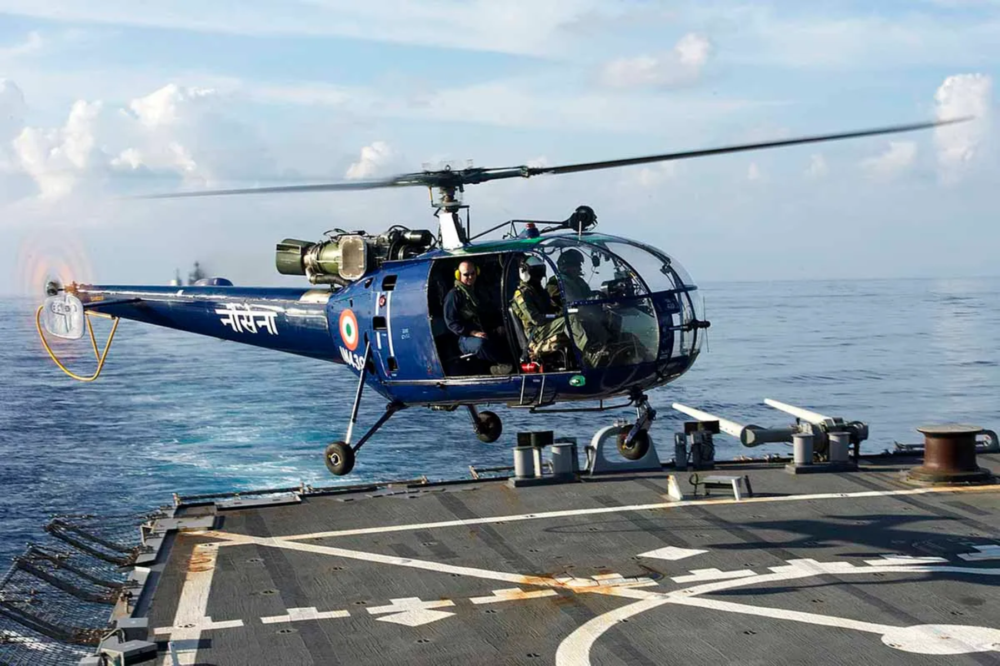
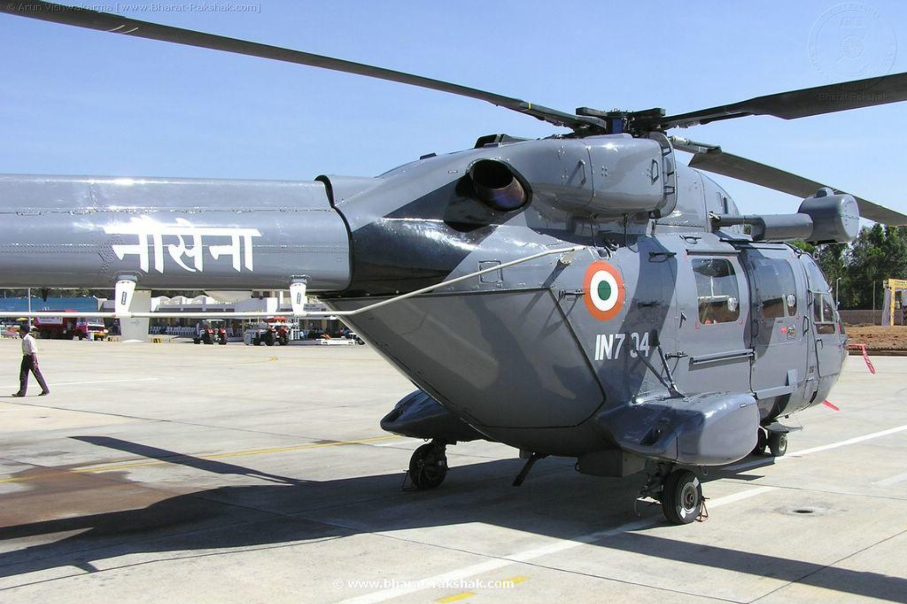

INS Vikramaditya (R33)
Moto: Strike Far, Strike Sure

History and Design
Originally Soviet-built as Admiral Gorshkov, INS Vikramaditya was acquired by India in 2004. After extensive upgrades, it was renamed and commissioned in 2013 as a modified Kiev-class carrier for STOBAR operations.
Key Features
| Aspect |
Details |
| Class, Origin & Cost |
- Class: Kiev class
- Origin: Soviet Union
- Cost: $10-11 billion (including all aircraft and systems)
|
| Size and Displacement |
- Length: 285m
- Width: 60m
- Displacement: Over 45,000 tonnes (full load), equivalent to three football fields.
|
| Flight Deck |
- Length: Over 280m
- Accommodates up to 34 aircraft.
- Aircraft include MiG-29K fighter jets, Sea King helicopters, Kamov Ka-31 AEW, etc.
|
| Propulsion |
- Four steam turbines, 180,000+ horsepower.
- Maximum speed: Around 30 knots.
|
| Armament |
- Four AK-630 close-in weapon systems.
- Various radars and electronic warfare systems.
|

Role and Significance
As the flagship of the Indian Navy, INS Vikramaditya ensures maritime security, deters threats, and aids in disaster relief. It also showcases India's naval power, contributing to regional stability.
Interesting Facts
- Over 22 decks, accommodates 110 officers and 1500 sailors.
- MiG-29K jets carry anti-ship missiles, air-to-air missiles, and bombs.
- Participates in joint exercises, demonstrating international cooperation.
Carrier Capabilities
Versatile Naval Presence
INS Vikramaditya, the flagship of the Indian Navy, has engaged in a spectrum of operations showcasing its versatility and strategic importance.
Maritime Security and Defense
- Plays a pivotal role in ensuring maritime security.
- Contributes to defense strategies, deterring potential threats in the Indian Ocean region.
Disaster Relief and Humanitarian Assistance
- Acts as a rapid-response platform for disaster relief operations.
- Provides critical humanitarian assistance during natural disasters.
Joint Exercises and International Cooperation
- Participates in joint exercises with other navies.
- Demonstrates India's commitment to international cooperation and maritime security.
Deterrence and Regional Stability
- Symbolizes India's naval power, acting as a deterrent to potential adversaries.
- Strengthens regional stability through its strategic presence.
Fleet Air Defense
- MiG-29K aircraft on board contribute to fleet air defense.
- Enhances the carrier battle group's capability to protect against aerial threats.
Strike Capabilities
- MiG-29K's advanced capabilities enable low-level strikes and anti-shipping missions.
- Adds offensive capabilities to the Indian Navy's maritime strategy.
Anti-Submarine Warfare (ASW)
- Westland Sea King helicopters are deployed for ASW operations.
- Enhances the fleet's ability to detect and counter underwater threats.
Airborne Early Warning (AEW)
- Kamov Ka-31 aircraft provide AEW capabilities.
- Augments situational awareness, improving overall operational effectiveness.
Utility and Support Missions
- HAL Chetak and HAL Dhruv helicopters undertake utility and plane guard duties.
- Contribute to logistics, support, and safety during operations.
International Presence and Projection
- The carrier's deployment in international waters showcases India's naval capabilities globally.
- Demonstrates commitment to a rules-based maritime order.
Primary Aircraft Types

MiG-29K (INAS 303 - The Black Panthers)
Advanced, all-weather multi-role fighter capable of fleet air defense, low-level strike, and anti-shipping roles.

MiG-29KUB (INAS 300 - White Tigers)
Variant used for training purposes.

Westland Sea King (INAS 330 - The Harpoons)
Venerable anti-submarine warfare (ASW) platform.

Kamov Ka-31 (INAS 339 - The Falcons)
Undertakes Airborne Early Warning (AEW) operations.

HAL Chetak (INAS 321 - The Angels)
Used for utility and plane guard duties.

HAL Dhruv (INAS 322 - The Guardians)
Multi-role utility helicopter.

HAL Tejas
(Completed trials)
Deployment and Configuration
- MiG-29K forms the backbone for fleet air defense, low-level strikes, and anti-shipping roles.
- Sea King specializes in ASW operations.
- Ka-31 serves as the primary AEW platform.
- Dhruv and Chetak handle utility and plane guard duties.
Notable Squadrons
- INAS 303 - The Black Panthers: Operates MiG-29K fighters.
- INAS 300 - White Tigers: Operates MiG-29KUB for training purposes.
- INAS 330 - The Harpoons: Operates Sea King helicopters for ASW.
- INAS 339 - The Falcons: Operates Kamov Ka-31 for AEW.
- INAS 321 - The Angels: Operates HAL Chetak for utility duties.
- INAS 322 - The Guardians: Operates HAL Dhruv for multi-role utility.
Conclusion
INS Vikramaditya's aircraft complement provides a versatile and formidable force, contributing to fleet defense, strike capabilities, anti-submarine warfare, and surveillance. The mix of fixed-wing and helicopter operations enhances the carrier's flexibility across various naval missions.